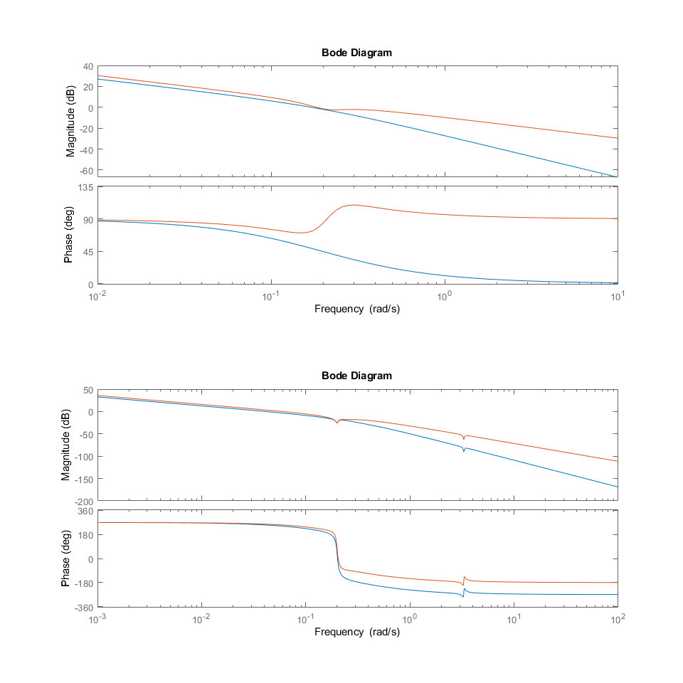
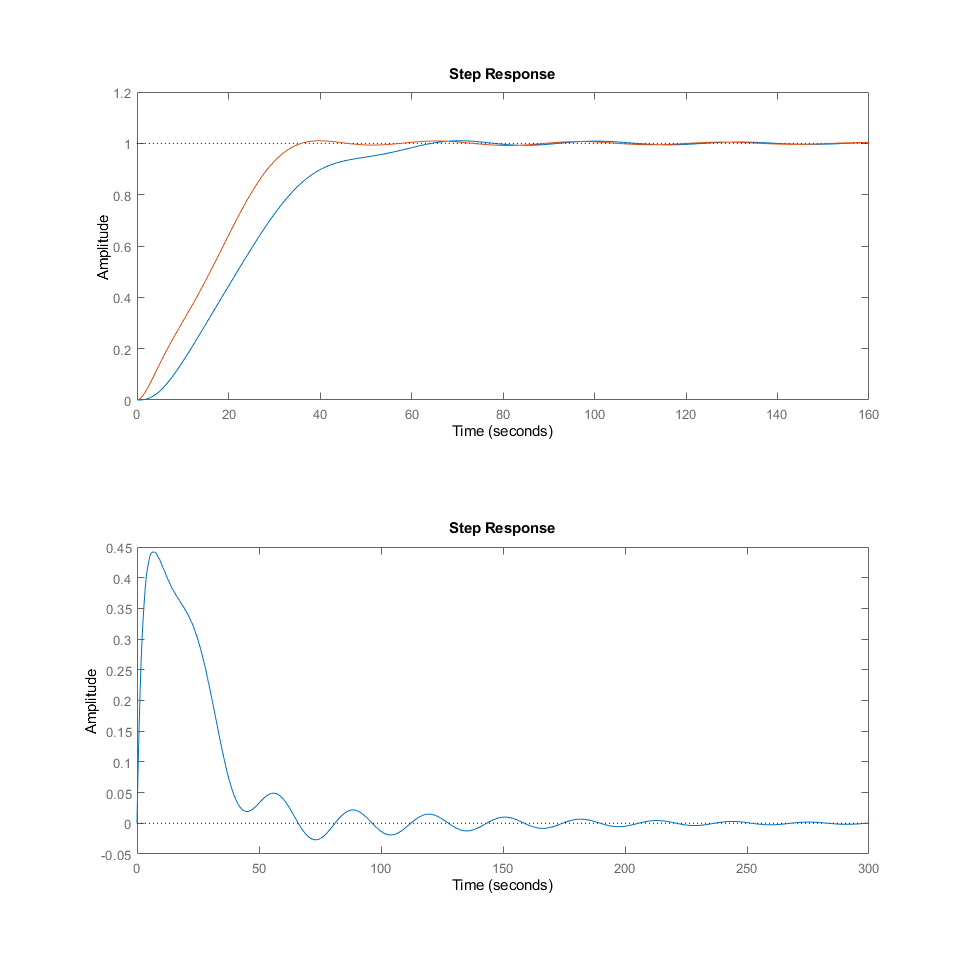
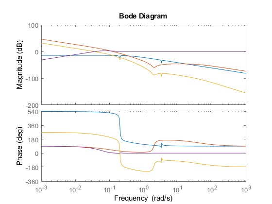
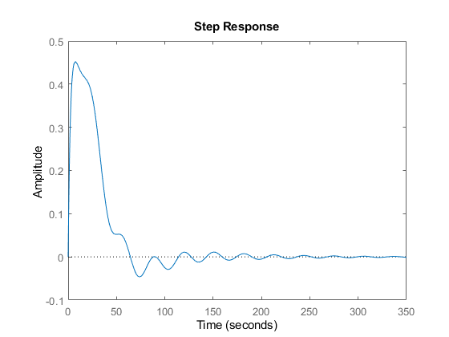
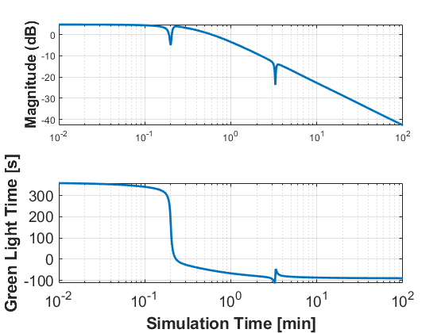
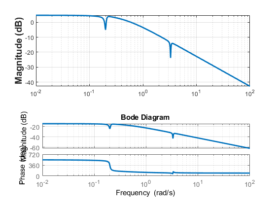

Contents
s = tf('s'); Gp = (-0.07988 *s^4 - 0.003315 *s^3 - 0.8677* s^2 + 0.006493* s - 0.03458)/... (s^5 + 0.5979* s^4 + 10.98 *s^3 + 4.709 *s^2 + 0.5421* s + 0.1827); Gv = (0.2204 *s^4 + 0.02348 *s^3 + 2.394* s^2 + 0.003981 *s + 0.09541)/... (s^5 + 0.5979 *s^4 + 10.98 *s^3 + 4.709 *s^2 + 0.5421 *s + 0.1827);
C= -2.759 s^2 - 0.003532 s - 0.1104 / s^3 + 2 s^2 + s beta = 10; T = 1/1.97; LagC = beta*(T*s+1)/(beta*T*s+1); Gc = -.023/s*LagC; PIDap = K/Ti * (1+s*Ti)*(1+s*Td)/s/(1+s*Tf); Gc = K/Ti * (1+ s*(Ti+Tf) + Ti*(Td+Tf)*s^2)/s/(1+s*Tf); LP2 = w^2/(s^2 + 2*w*b*s + w^2) N = (s^2 + 2*w*b1*s + w^2)(s^2 + 2*w*b2*s + w^2)
%I; % w = .21; b = .25; % 0.01 K = -.33; Gc1 = K*(s^2 + 2*w*b*s + w^2)/s/(s^2 + 2*w*.5*s + w^2); Gc0 = -.18/s; beta = 10; T = 1/1.97; LagC = beta*(T*s+1)/(beta*T*s+1); Gc = -.0443/s/(s+.197); % w = .21; % b = .25; % 0.01 % K = -.33; % Gc = K*(s^2 + 2*w*b*s + w^2)/s/(s^2 + 2*w*.5*s + w^2); % Gc1 = -.247*(1/.7*s+1)/s/(1/.2*s+1); % L = Gc * Gp; close all figure('Position', [0 40 960 960]); subplot(2,1,1); bode(Gc, Gc1); subplot(2,1,2) bode(Gc*Gp, Gc1*Gp); figure('Position', [960 40 960 960]); CL = feedback(L,1); DL = (Gv/(1+L)); subplot(2,1,1); step(CL); hold on step(feedback(Gc1*Gp,1)); % step(feedback(Gc1*Gp,1)); hold off subplot(2,1,2) step(DL); hold on %step((Gv/(1+Gc1*Gp))); % step((Gv/(1+Gc2*Gp))); hold off stepinfo(CL).Overshoot,stepinfo(CL).SettlingTime
ans =
1.0047
ans =
59.2985
  DR
close all %P + Lag Filter; %Best for Reference Tracking w = 1.97; b1 = .1; b2 = 10; N = (s^2 + 2*w*b1*s+w^2)/(s^2 + 2*w*b2*s+w^2); Gcd = -.2 *(s^2 + 2*w*b1*s+w^2)/(s^2 + 2*w*b2*s+w^2)/s; L = Gcd*Gp; CL = Gcd*Gp/(1+Gcd*Gp); S = 1/(1+Gcd*Gp); figure; bode(Gp, Gcd, L,S) figure; step(Gv*S) [stepinfo(CL).Overshoot, stepinfo(CL).SettlingTime]; figure; [mag,phase,wout] = bode(-9.1*Gp); Mag=20*log10(mag(:));Phase=phase(:); title('Bode Plot of L= GK for Gain K=-9.1', 'Fontsize', 20); subplot(2,1,1);semilogx(wout,Mag,'LineWidth',2);grid on; ylabel('Magnitude (dB)', 'Fontsize', 14, 'fontweight','bold'); subplot(2,1,2);semilogx(wout,Phase,'LineWidth',2);grid on; xlabel('Frequency (rad/s)', 'Fontsize', 14, 'fontweight','bold'); ylabel('Phase (deg)', 'Fontsize', 14, 'fontweight','bold'); % legend({'$g_d(k) = 15$s','$g_d(k) = 45$s'}, 'Location','northeast', 'Interpreter', 'Latex', 'Fontsize', 20); xlabel('Simulation Time [min]', 'Fontsize', 14, 'fontweight','bold'); ylabel('Green Light Time [s]', 'Fontsize', 14, 'fontweight','bold'); set(gca, 'Fontsize', 14) grid on  
bode(Gp) grid Fh = gcf; % Handle To Current Figure Kids = Fh.Children; % Children AxAll = findobj(Kids,'Type','Axes'); % Handles To Axes Ax1 = AxAll(1); % First Set Of Axes LinesAx1 = findobj(Ax1,'Type','Line'); % Handle To Lines LinesAx1(2).LineWidth = 2; % Set ‘LineWidth’ Ax2 = AxAll(2); % Second Set Of Axes LinesAx2 = findobj(Ax2,'Type','Line'); % Handle To Lines LinesAx2(2).LineWidth = 2; % Set ‘LineWidth’